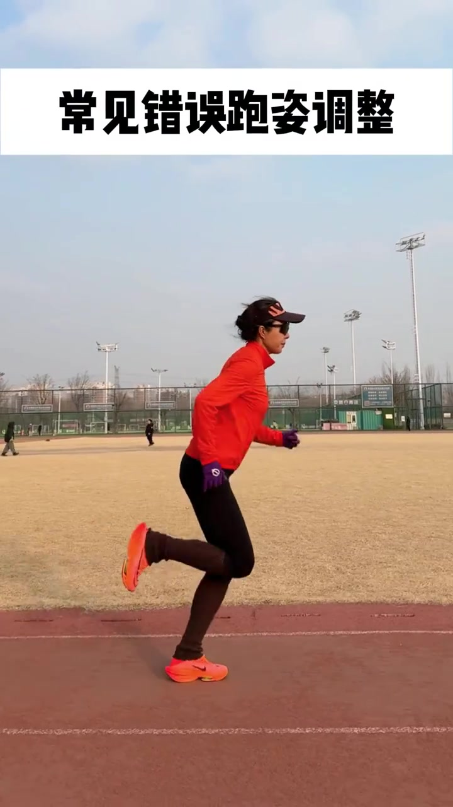
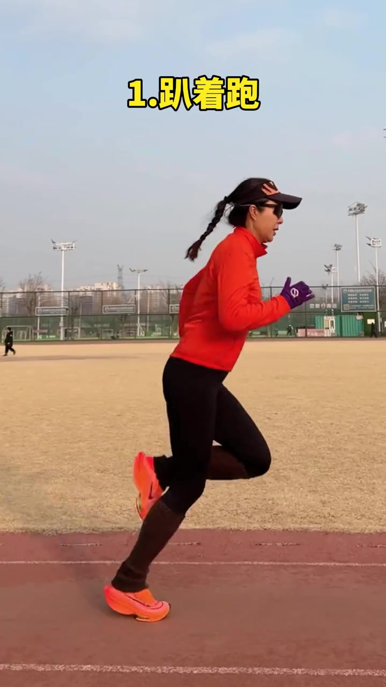
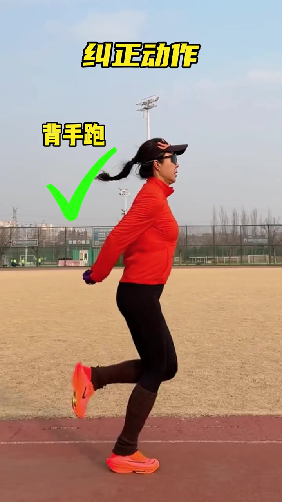
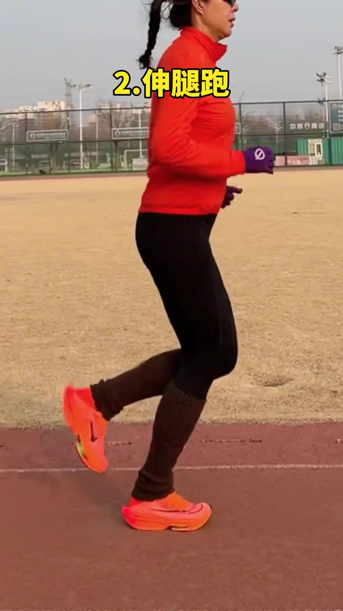
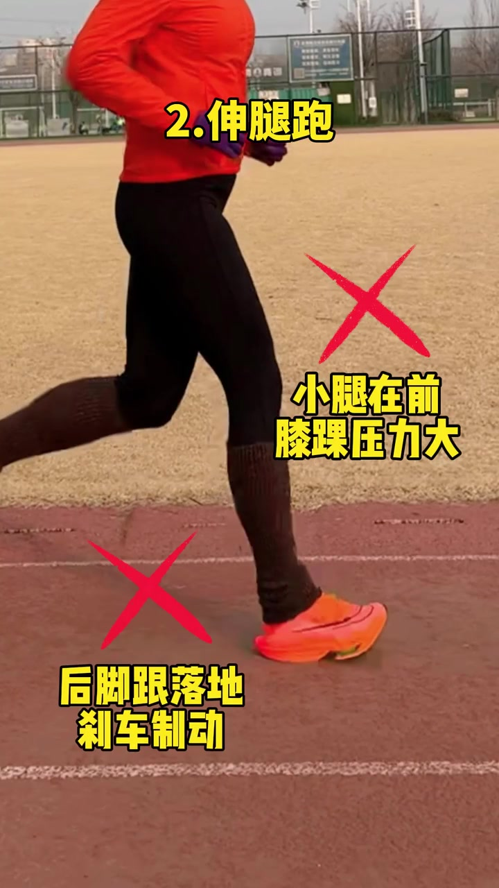
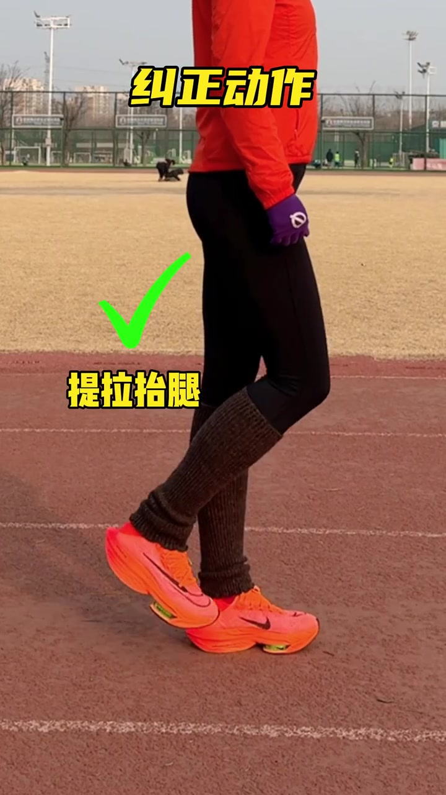
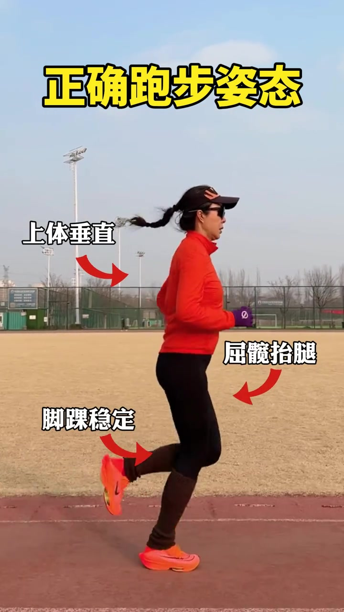

开场 · 00:00
先把主题钉在画面上方
镜头一开始就是作者在塑胶跑道上侧向跑步的全身中景：橙红外套、黑紧身裤、亮橙跑鞋、遮阳帽与墨镜。顶部白底黑字大标题直接点题——「常见错误跑姿调整」。17 秒短视频几乎没有可辨口播，信息主要靠画面大字、红叉/绿勾标注和笔记文案推进。
本片配乐较强、口播不可辨。Whisper 原始识别曾出现字幕署名幻觉，页末转录按「[听不清]」保留原始分段时间轴。正文依据画面叠加字与笔记文案展开，不补写未说出的口播。

错误一 · 00:02
点名第一种常见问题：趴着跑
约两秒处，顶部黄字切换为「1. 趴着跑」。作者仍在侧向演示跑姿；结合笔记说明，这类姿态往往抬不起腿、过度前倾、屈髋不足。视频先用编号把问题立住，还没立刻给纠正，让观众先记住症状名。

纠正一 · 00:05
立刻给出动作：背手跑
随后标题变成「纠正动作」，左侧出现绿色对勾和「背手跑」。作者双手背在身后继续跑：上体更直立，腿部仍保持提拉节奏。把双臂固定在背后，是为了逼身体用躯干与髋部找平衡，而不是靠趴着的前倾撑住跑姿——这是视频给出的肌肉记忆训练法，不是要求比赛时一直背手跑。

错误二 · 00:08
第二种问题：伸腿跑，并标出两个刹车点
约八秒起，标题切到「2. 伸腿跑」。画面先给出侧向跨步，再叠加两处红叉：前侧小腿过度前伸处写「小腿在前 膝踝压力大」；落地脚后跟附近写「后脚跟落地 刹车制动」。这一段把「看起来迈得大」拆成压力与制动两个可观察后果。


纠正二 · 00:12
对应纠正：提拉抬腿
纠偏段落再次打出「纠正动作」，左侧绿勾配「提拉抬腿」。镜头更偏下肢：抬膝、收腿的动作被放大，强调用提拉取代向前甩小腿。结合笔记，这是对「伸腿跑」的直接对症训练。

收束 · 00:14
正确跑步姿态压成三条箭头
结尾标题改为「正确跑步姿势／姿态」。三条红箭头分别指向：脊柱附近的「上体垂直」、前侧大腿的「屈髋抬腿」、后侧脚踝的「脚踝稳定」。整段从「两种错误 → 两项纠正 → 三条标准」收束，方便把正确姿态练进肌肉记忆。

17 秒看完发生了什么
开场立题 → 趴着跑（问题）→ 背手跑（纠正）→ 伸腿跑及两处红叉（问题）→ 提拉抬腿（纠正）→ 正确姿态三要点。信息几乎全在画面字与动作演示里；笔记文案与画面标注一致，可互相核对。